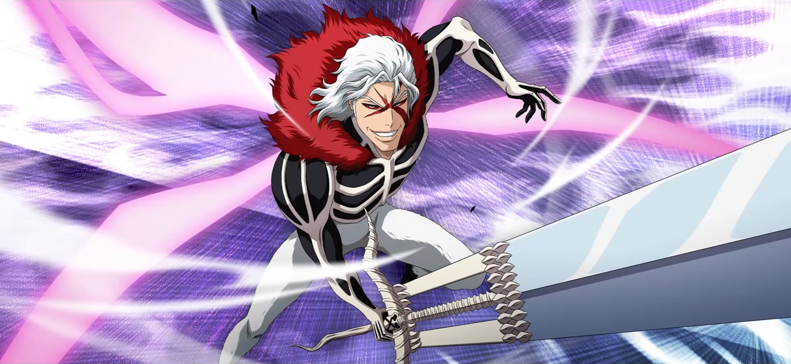

Information about Fullbring
Fullbring is a power that humans can have the way a person gets a fullbring is that thier mother was attacked before they are born by a hollow this means that these humans gained thier powers from hollows and each fullbring is uneach to each person and these people can see Hollows and soul reapers a persons fullbring can be attached to something they care about like a necklace or a book mark and the powers they have are uneach to that person alone. Givin that a persons fullbring is with them seance birth they have full control over thier power they just need to learn how to make the power stronger.
